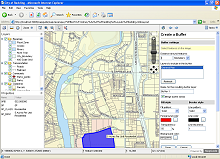

MapGuide Open Source is a web-based platform that enables users to quickly develop and deploy web mapping applications and geospatial web services.
MapGuide features an interactive viewer that includes support for feature selection, property inspection, map tips, and operations such as buffer, select within, and measure. MapGuide makes extensive use of XML for defining content and supports most popular geospatial file formats, databases, and standards. The MapGuide platform runs on both Linux and Microsoft Windows, supports Apache and IIS web servers, and supports application development in PHP, .NET, Java, and JavaScript.
MapGuide Open Source is free, open source software licensed under the LGPL.
What's "The MapGuide Open"? Watch this space and find out on March 7.
EssentialsAbout (Under Construction) Sample Sites (TBD) Architecture (Under Construction) General FAQ (TBD) |
DocumentationGetting Started Guide Developers Guide [PDF] Web API Reference [HTML] Viewer API Reference [HTML] |
{kind=link}